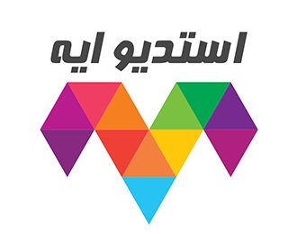

About Me
An experienced certified Digital Transformation and Project Manager with 13+ years of experience and ability to combine business, technology and leadership capabilities to deliver strong results
Professional Skills
Learning and Development Strategy
Client Engagement and Relationship Management
Project and Product Management
People and Team Management
Business Development Strategy
Partnership Development and Management
Presenting and Public Speaking
Content and Digital marketing
Current Experience
Tech Columnist at Makkah Newspaper
June, 2020 - Present
- Writing weekly about the impact of Social media and Technology on people
- Covering technology news and trends, ranging from Startups to Digital Transformation news
- Profile
Co-Founder at Saudi Group for Project Managers
October 2010 - Present

- Design and build a world-class group for the Project Managers, focused on adding real and unique value to Project Management Local Community
- Manage logistics, operations, administration, scheduling, calendar management (mentors, speakers, and events) and planning for the Group
- Build a strong mentor and technical expert network to support the group programs
- Work with subject-matter experts and identify target Project managers audience’s training and skill needs
- Manage relationships with sponsors and fellow University programs and departments to advise on group events and initiatives
- Lead communication and engage with any potential companies, community and partners with interest in the group
Digital Transformation Manager at Naseej
Apr 2015 - Present
- Ministry of Interior – AFIS program
- Delivered Criminal Fingerprint System, Civilian Fingerprint System, 15 sectors applications development andmiddleware integration
- Established 3 sites (active-active-active) disaster recovery plans (DRP) for MOI database and biometrics projects
- Led 3 projects, working with cross-functional teams to develop the (Fingerprint, IRIS, Facial recognition) softwares and hardware installation of more than 5000 workstations around the kingdom
- Producing detailed project plans to manage interdependencies and ensuring strict change control to manage deviations
- Princess Nourah University – IT Operation and Maintenance (IT O&M Project)
- Responsible for End-to-End transition project management, including scope, estimates, schedule and risks, till Closure Phase and Hand Over to delivery/run operations.
- Managing a wider transition team including project management resource, internal technical resource, 3rd party suppliers, account team members and client stakeholders
- Managing PMO, IT Systems, Customer Care, Proactive Support, Helpdesk L1, Procurements.
- Saudi Aramco – EPM Intelligent Process Automation
- Reengineering and Development of 15 EPM processes and workflows
- Implemented complete End-to-End automation of Business Processes, Design, Integration and Optimization of Emerging Unconventional Assets Department (EUAD) department.
- Ministry of Education - Integrated Master Database
- Incorporated 65 public and private universities databases into a unified MOE master database
- Implementing multiple End-To-End Data Management solutions, Data Analysis, Profiling, Quality, Modeling, Data Governance, Migration and Conversion.
- Create dashboard(s) to provide a view of all compliance issues, KPIs and checks
- Ministry of Investment – InvestSaudi.SA
- Portal and E Services development, UX strategy, personas, workflows, information architecture, wireframes, page maps, interaction and behavior specifications, visual design, and content strategy
- Support project team in business requirements gathering process, advice on best templates, approaches and techniques to be conducted.
Previous Experience
Head of Marketing and Community Engagement at World Information Architecture Day
Mar, 2019 - Feb, 2020

- Develop all marketing and program event materials to promote the WIAD day
- Engage with speakers, mentors, and sponsors to ensure the successful execution of WIAD day
- Create and manage promotions - ads, events and other marketing activities to promote the WIAD day
- Maintain relationships with mentors, workshop leaders, investors, coaches, guest lecturers to promote the program
- Profile
CEO and Founder at Aya Games
2013 - 2015

Aya Games is a mobile & Social gaming development studio focused on creating culturally relevant games for the huge unaddressed Arabic gaming market
Program Manager at TECHNOLOGY MATRIX
Oct, 2012 - Mar, 2015
- National Information Center - integrated electronic signature
- Successfully manage the project of developing and installing the integrated electronic signature software for 13 emirates and MOI- National Information Center
- Support Quality team to prepare UAT scenarios and close it with both end user and client technical team.
- Prince Sultan Military Medical City (PSMMC) - Procurement Management System
- Development of the new enhanced procurement management system
- Saudi Electricity Company (SCECO) - Internal Portal
- Development of SharePoint 2013 infrastructure, migration of existing SP 2007 internal portal, implementation of MS-EPM 2013, and consolidation of .NET applications on a single infrastructure.
- Ministry of Health - HR system
- Managed all phases of the software development lifecycle (SDLC) for HR system in MOH
IT PROJECT MANAGER at NATIONAL BANK OF BAHRAIN
Mar, 2007 - Sep, 2012
- Successfully Manage the Project of Migration of The Old Conventional Core Banking System into A New Islamic CBS (TC4 core banking) As Per SAMA Requirements.
- Create & Maintain work flow & procedure for Islamic products (Tawarq, Wakala, Murabaha, Musharaka)
- Implementation and management of Anti Money Laundering (AML) system for monitoring all SWIFT/SARIE payments using international BlackLists.
- Implementation, administration and full automation of SWIFT and SARIE systems along with the development of the interface between vendor application and Bank's Host application. This included the development of different systems under C, C/400, Visual basic, Visual Basic.NET and Unix scripts.
- Coordinating the implementation of (SAMAnet) with different vendors within accordance with SAMA supervising the project
- Manage ERMS2 Project in Coordination with SISCOM And SBM (Including Software Installation, Hardware Procurement, and Database Maintenance …Etc.)
- A Project Manager of SAMA PCI DSS compliance certification
- Maintenance of certificates using e-trust system